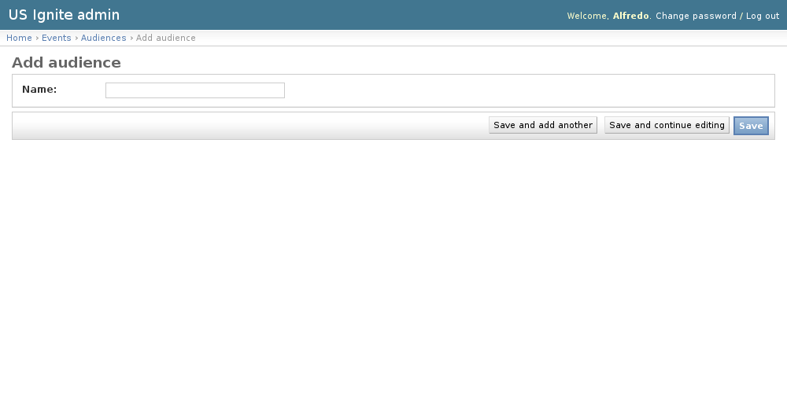

events admin section¶
This section list the events section and its usage in the site.
View existing Audiences¶
The existing Audiences can be listed in the /admin/events/audience/ URL. From this section the details of these Audiences can be inspected.
And the following actions can be performed:
- View the details of the Audiences.
{kind=link}
Adding Audiences¶
Adding Audiences can be done from the /admin/events/audience/add/ URL.
The following fields are available to create Audiences:
- Name: Required.
These Audiences are created so ...
{kind=link}
Unpublishing / Removing Audiences¶
In case Audiences needs unpublishing it can be done from the detail admin view by changing the status of the Audiences to draft or removed
Note
The Audiences can be browsed in the /admin/events/audience/ URL.
View existing Events¶
The existing Events can be listed in the /admin/events/event/ URL. From this section the details of these Events can be inspected.
And the following actions can be performed:
- View the details of the Events.
- Filter the Events by: status, start_datetime, is_featured, created.
- Search the Events by their contents.
{kind=link}
Adding Events¶
Adding Events can be done from the /admin/events/event/add/ URL.
The following fields are available to create Events:
- Event name: Required.
- Slug: Optional.
- Status: Required.
- Image: Optional. Image suggested size: 500x400px
- Short description: Required.
- Start Date/Time: Required.
- End Date/Time: Optional.
- Timezone: Required.
- Address: Required.
- Organization: Optional.
- Scope: Required.
- Audiences: Optional. Hold down “Control”, or “Command” on a Mac, to select more than one.
- Audience other: Optional.
- Website: Optional. Please enter a URL starting with http or https
- Event type: Optional.
- Tickets URL: Optional. Please enter a URL starting with http or https
- Communities: Optional. Hold down “Control”, or “Command” on a Mac, to select more than one.
- Position: Optional.
- User: Optional.
- Is ignite: Optional.
- Is featured: Optional.
- Notes: Optional.
- Tags: Optional. A comma-separated list of tags.
These Events are created so ...

Unpublishing / Removing Events¶
In case Events needs unpublishing it can be done from the detail admin view by changing the status of the Events to draft or removed
Note
The Events can be browsed in the /admin/events/event/ URL.